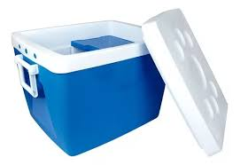
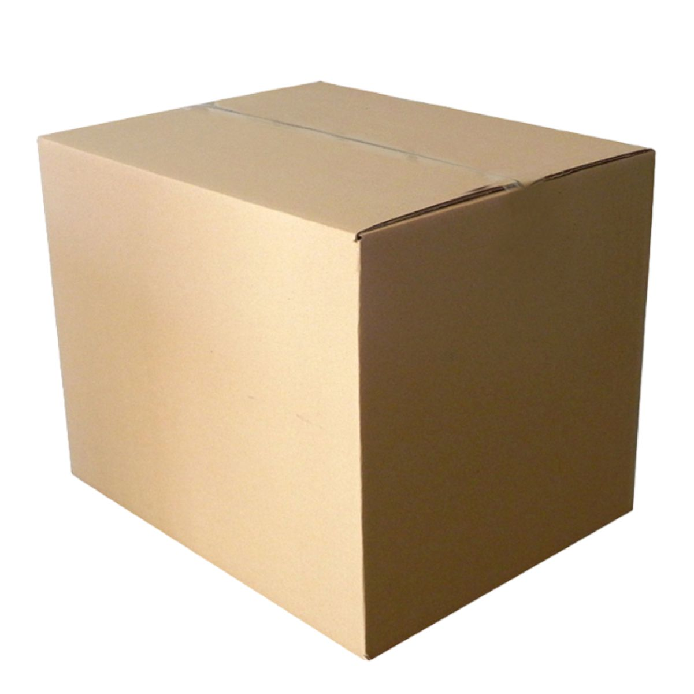
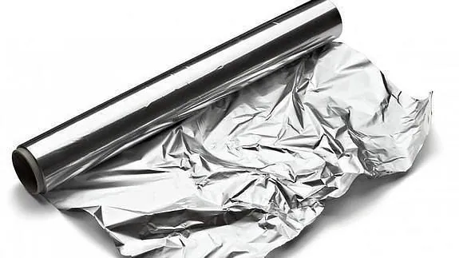
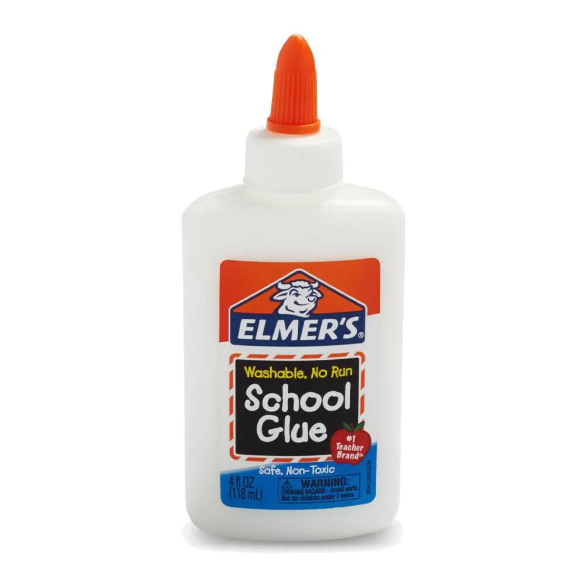
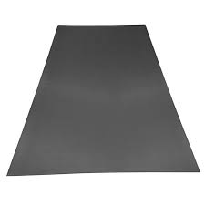

La cocina solar se destaca como una alternativa ecológica para preparar alimentos, utilizando únicamente la energía del sol. Este método innovador no requiere gas ni electricidad, sino que se basa en un concentrador parabólico que focaliza la energía solar en un área pequeña, similar al funcionamiento de una lupa. Este proceso genera calor suficiente para cocinar todo tipo de alimentos sin producir humo ni utilizar combustibles fósiles, alcanzando temperaturas de hasta 220°C.
Historia
Los Inicios
Los primeros hornos solares datan de finales del siglo XVII. Fue E. W. Von Txchirnhausen quien construyó en Dresde (Alemania) un horno con un espejo cóncavo para cocer el barro para hacer cerámica. En 1774 el científico inglés Joseph Priestley, descubridor del oxígeno, construyó un horno solar con una lente de 1 metro de diámetro que conseguía 1.700 ºC y permitía fundir el platino.
La Cultura y la energía
El primer colector plano para aprovechar el calor solar fue diseñado por Horace de Saussure, un naturalista suizo que experimentó en 1767 con el efecto físico del calentamiento de una caja negra con tapa de vidrio expuesta al Sol. Las experiencias de Saussure son relevantes porque descubrió que, al exponer estas cajas al Sol, la temperatura aumentaba en el interior de cada una de ellas hasta el punto de alcanzar más de 85 ºC, hecho que permitía cocer fruta. Más adelante, experimentó con nuevas cajas hechas de madera y corcho negro y, en contacto con el Sol, la temperatura llegó a los 100 ºC. Sin embargo, aislando el interior de la caja a base de intercalar lana entre las paredes de la caja caliente la temperatura alcanzó los 110 ºC, incluso cuando la temperatura ambiental no era nada favorable. Eso le hizo cuestionarse si la radiación solar en una montaña donde el aire era más transparente podría atrapar menos calor. Para verificar su hipótesis, Saussure subió a un pico suizo y constató que, a pesar de que la temperatura exterior era de 1 ºC, dentro de la caja caliente se superaban los 87 ºC. Además, cuando la temperatura ambiental alcanzaba los 6 ºC, porque descendía hacia el llano, en el interior de la caja se mantenía el mismo calor. Saussure predijo: "Algún día este ingenio, que actualmente es pequeño, barato y fácil de fabricar, puede ser de gran utilidad". Este científico había tenido una visión, a pesar de que sus experimentos quedaron en el olvido durante cerca de medio siglo.
Tipos
Cocina directa: El recipiente con los alimentos se coloca en el punto focal del reflector parabólico.
Cocina a vapor: Los alimentos se cocinan con el vapor generado al calentar una pequeña cantidad de agua, que luego se condensa y vuelve a convertirse en vapor.
Cocinas caja/horno: Utilizan una cámara aislada con una ventanilla lateral para captar la radiación, apoyada por reflectores.
Materiales
Heladera térmica de poliestireno

Caja de cartón

Papel Aluminio

Pegamento

Superficie metálica negra

Encuesta
¿Te gustaría darnos un minuto para completar esta escuesta?